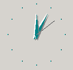
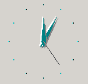
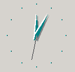
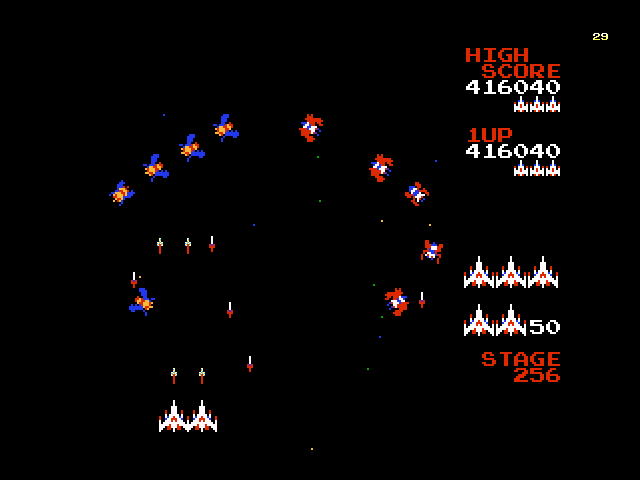
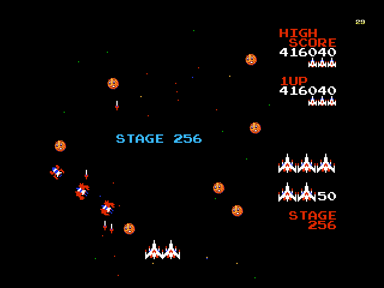
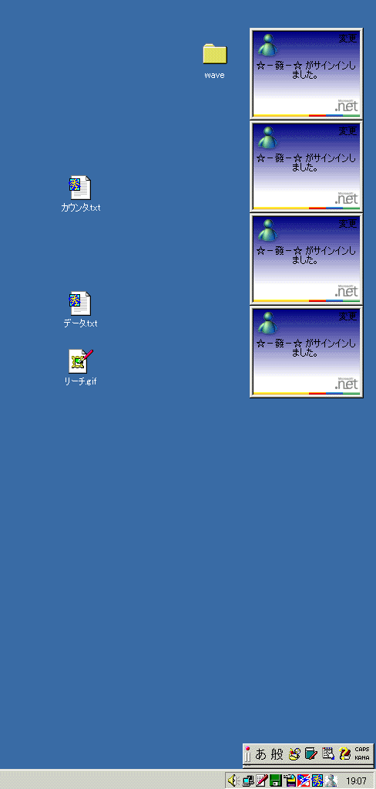
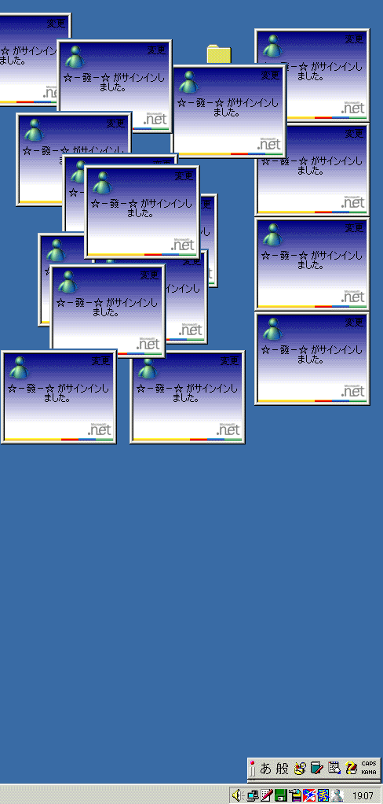

〜〜過去の雑記〜〜 （日記ペース無理なんで雑記に名称変更）
９）01/08/30〜01/10/30分
８）01/06/20〜01/08/25分
７）01/05/09〜01/06/12分
６）01/03/02〜01/05/03分
５）01/02/06〜01/03/01分
４）00/12/30〜01/02/05分
３）00/12/22〜00/12/29分
２）00/12/14〜00/12/21分
１）00/11/24〜00/12/13分
02/07/08
出張版「凡辞苑」
・「筋」
「筋が通ってない」という発言において最も使われる。
大衆は全ての（自分に不利な）論理を「屁理屈」「机上の空論」と見なしたがる習性を持ち、かつ実際に「論理」に対して劣等感から来る嫌悪感を抱いているため、「論理」という言葉を使いたがらない。
その結果、論理っぽいことを述べようとする場合、よりイメージのよい「筋」という言葉を好む。
相手の理屈的な問題を「正論っぽく」断罪する効果があるばかりか、「筋」として主張しておくことによって、もし相手に正確な「論理」を使われて負けそうになっても、「屁理屈」「頭でっかち」などの凡言で言い返せる余地を残せる。
ところで、「筋を通すべき」などという思い込みこそまさに筋違いである。なぜなら「筋」には必ずしも理屈が通っていないからである。
例えば東北大学工学部において何年間も勉強してきた結果、入学前から夢だった、自分のやりたい研究ができるかどうか？ それは研究室配属ジャンケンによって決まる。
「上がそう決めた」という事実で充分納得できるし、それは理屈上正しい。
しかしこのシステムに対して「筋が通ってない」と批判することは可能だろう。
逆に、「学校の決まりなのだから、反論することは筋違いだ」と言うこともできる。
「先に言った者勝ち」という低俗さにおいて、秀でた能力を持たない人々にも「勝つ」チャンスがあるという意味において、お似合いの凡言である。
・「能ある鷹は爪を隠す」
爪のないタイプの平均人が、爪を見せられた時に反射的に発する言葉。
相手に爪を突きつけらた事実に対して、爪を突きつけ返すことができないために
「その爪は本物ではない、爪を見せたら真の爪ではない。ゆえに、自分と同様、相手も爪を持っていない」
と自分の認識をゆがめるために使用される。
この嘘を流布させることによって、「自分を攻撃してこない能力者」「自分に劣等感を与えない能力者」だけに「能力」を認め、そうでない能力者を見下すことが彼らのもくろみである。
実際には、世界にいる約280種の鷹のうち、爪を隠す（引っ込める）構造を持った鷹は存在しない。
腕力の強いガキ大将に対して「本当の強さ」を対置し「それは本当の強さではない」と言う形式である。
いわく「弱いものを守る力が本当の強さ」であったりする。彼らに不利な「強さ」「爪」は認めないというわけだ。
彼らもまた同様に「本当の強さ」を（それどころかニセの強ささえも）持っていないのだが、強さを持った相手を自分と同じ「無能」に引きずり落とせば彼らは大満足であろう。
自分が認めたくないタイプの頭の良い人物に対して「本当の賢さ」を対置し「〜〜ができることだけが賢さではない」と言うのも同じである。
なるほど賢さは一つではない。
しかしこの言葉を発する彼らが、別のどんな賢さを持っているのかについて、我々は永遠に知ることができない。
というのも彼らは、どんなときにも（獲物を捕らえるべき格好の瞬間にさえ）、爪を隠しつづけているように我々には見えるからである。
不思議なほど、彼らの主張・行動・発話からは、どうやっても爪の存在を見てとることができないのである。
なんと爪を隠すことに長けていることか！
（どうしてこの人は、何をする時にも、何を言う時にも、爪が出ないんだろう・・・？）
早く出してくれ、君の立派な爪を。
02/07/02 07/01の日記を先にお読みください
「続・桃とつ」〜性行為構造分析の周辺、ブスの性行為代償行為形式
・性的幸福に関して
ブスと結婚する男性は、ブスと同様、性的幸福を諦めた人間である。
確かに人間にはたくさんの幸福の要素があるから、それを批難するわけではない。
しかしながら、性的幸福を諦めさせるような女性が、女性としての価値があるとは信じがたい。
美人はもっと自信を持って良い。
少しくらい高飛車であれ何であれ、彼女は男性に少なくとも一つの幸福を提供するし、それは彼女の機嫌や性格などに左右されない。
「美は幸福を約束する」（スタンダール）
性的幸福は、必ずしも本番の性行為にだけあるわけではない。
少々疲れたとき、彼女の顔を見て元気が出ること、頑張ろうと思えること、それもまた性的幸福である。
ただし私はかなりブサイクであると同時にかなりメンクイだから、一般の男性よりは少々「幸福」の要素が「彼女のかわいさ」に強く依存している可能性はある。
それに、例えば知性がない男であれば、知性のある女性に魅力を感じる可能性もあることは否定しない。
だが、知性がない男性が知性のある女性に魅力を感じるのは、その逆の場合に比較して遥かに少ないことは先日の分析からも明らかだろう。
私の場合女性に知性など全く求めない。
性格の良い美人はいくらでもいるから、性格もあまり評価しない（さらに言えば、経験的に美人の方が性格が明るく、卑屈でなく、付き合いやすい、つまり性格もいい。ブスは非常にしばしば自分の劣等を正当化するために五月蝿い道徳家になっていたりする・・・「道徳」とは劣等を隠すための道具としてのみ成立し発展したという事実については過去の日記と黒とつを参照）。
性的幸福を約束する女性だけが好きである。
選べない立場の男性を除いて、性の対象とは原理的に「かわいい子」のみなのだから、このような好みは少数派というよりはむしろ一般的であると思われる。
（その証拠に有名人はおしなべて美人さんと結婚する）
・性的幸福が得られない人間の代償行為に関して
さて、ブスは「直接的な」性的幸福を得られないのであったが、なおも浅ましく性的幸福を追求する。
性的幸福は端的に言って、「かわいい子がいじめられること」によって得られる。
ところが自分が外見上「かわいい子」でない場合、「かわいい子」の概念は巧妙に捻じ曲げられ、より精神的な、より繊細な、より浮いたものに豹変する。
「自分は（何らかの意味で）かわいい子である」かのような妄想が、ブスの頭を支配する。
例えば男性が普通に接しているのに、「私あの人につきまとわれてる」「飲み会の時、触られた」「あの人の発言はセクハラ」と感じるようになる場合がある。
ちょっと性的なことを言った場合、普通の子や美人さんなら冗談で流せるところを、極度に嫌がったりする。
実際私も、このような経験は２〜３度あるのだが、友達に聞いても、ブスの方がこういった反応をしやすいようだ。
ここでのブスの心理について考察しよう。
ブスとは「レイプされ得ない存在」である。
性的幸福を与えることができず、また自分自身も「かわいい子がいじめられている」状態を楽しむことができない存在である。
つまり、性的な対象として自分を見る機会がない。
そこで、このようなちょっとした出来事の際に、「私は性的に見られている（いじめられている）」ということをここぞとばかりに強く意識し、妄想し、欲情する。
普段はあり得ない「いじめられる私−かわいい私」に萌えるわけだ。
さらにはそのことを友達に相談してしまったりし、より一層「普段味わえない豪華な体験」を満喫するに至る。
レイプされ得ない存在のレイプ願望、レイプ妄想、精神的レイプ体験であり、長年に渡る欲求不満と性的不幸とのせめてもの埋め合わせなのである。
ここで強く断定しておくが、「セクシャルハラスメント（性的嫌がらせ）」は、ブスに対しては原理的には成立しない。
なぜなら、ブスに対して性的感覚を持つことがあり得ないからだ。
男性がブス専でない限り、それはせいぜい単なる嫌がらせであったり、ブスの自意識過剰（精神的レイプ体験願望）の結果に過ぎない。
・蔓延する、ひねくれた性的幸福について
「かわいい子がいじめられる」という性的幸福の形式は、しばしば、「かわいい＝弱い」という代替によって「弱い子がいじめられる」興奮状態にすりかえられる。
例えば、「僕は〜〜な難病にかかっているんです」「自分の息子が死んでしまいました・・・どうしてうちの子が」などとＨＰなどで仰々しくアピールしている例がそれである。
ここで彼らは、Ｍ的快楽、性的興奮状態を得ている。
「被害を受けた自分」をアピールすることは、人前でオナニーすることと同様非常に恥ずかしいことだと思うのだが、非常に多くの人が無意識的にＭ的発言をしているのには驚かされる。
Ｍ的な発現形を持つ人間の発言は、すぐに見抜ける。大衆は、ちょっと気を抜くとすぐにＭ的発言をしてしまうようだ。
彼ら、彼女らはまさか他人の前でチンチンをこすったりはしないだろうが、こういった性的構造について無知だから、臆面もなく人前で精神的オナニーをする。
しかしそもそも、当事者が本当に外見上「かわいい子」でもない限り、これは非常にひねくれた性的幸福であり、代償行為の典型と言えよう。
特に男性がこのような発言をしているとき、私はそこにホモ的倒錯を見て取るから、極めて気持ち悪い。
かわいい子が「私こんなに不幸なんです」と発言すれば、まぁ、かわいいしその子も気持ちよくなってるのであろう。かわいい子のオナニーなら見ても良い（笑）。
ブスが同じことをする時、それは「レイプされ得ない人間が、精神的にレイプされることによって欲望を満たす」浅ましい行為に他ならず、気持ち悪いものを他人に無理やり見せつける行為という意味では一種の逆レイプであり、我々は性的代償行為の一方的被害者になる。即座にやめていただきたい。
男性がそうするとき、彼は単なるホモであり変質者である（しかしこういう男性は少なくない）。
・余談１
ちなみに私はＳＭ的性質が比較的強い人であり（その性質は誰しも少なからず持っている）、かつ発現形はＳである（Ｍの快楽も理解できなくはない程度には持っているが、恥ずかしくて他人の前では出さない）。
私はＳであると知り合いに言うと、「なるほど、わかる」などの反応が多い。
しかしその理由として、ネット上の議論などで相手をコテンパンにしたり毒を吐いたりする性質を挙げるのは完全に間違いである。
あくまで性的興奮の主体は「かわいい子」だから、相手が女性ならいいが男性をいじめて楽しいわけがない。
それらは単に、議論で相手を負かしたり相手を嘲笑することの「笑い的盛り上がり」を追求しているに過ぎない。
そこに性的要素はなく、それは構造的に「オナニー」や「性的行為」ではない。
・余談２
ところで「お前のやってることはオナニーだ」的な言い方があるが、「オナニー」という語はもう少し限定的に使用した方が分析的であろう。
「オナニー」とは、「（ここで言ったような）性的背景を持つような、自分だけが満足する行為」であり、それが相手や読者を満足させるような活動になれば「ｾｸｰｽ」であり「AV」である（笑）。
では私がここでやっているような行為は何だろうか？ 普通に、「自己満足」に他ならない。より詳しく言えば「無目的的・対他活動的・自己満足」と言えるだろう。
家で一人で逆立ちとかして満足しているのは「無目的的・対自活動的・自己満足」。
仕事で収入を得るのは「合目的的・自己満足」（対他活動の場合もあるし対自活動の場合もあるし両方の場合もある）。
しかし全ての行為は自己満足なのだから、別に「自己満足」と敢えて言う必要はない。
「てめぇおもしろくね〜よ」の一言で充分である（その発言をした瞬間から、面白い議論が始まったりもする 笑）。
「自己満足」と「オナニー」を同義に使うむきがあるが、あれは物事の分析の場合にはふさわしくない。
「彼の発言はオナニーだ」と言うのは、「私被害者なんです」的な発言に対する場合のみに留めたほうがよい。
なお、相手をイメージ的に貶めたい場合、「オナニー」という言い方はもはや陳腐すぎるきらいもある。言葉の輝きはいつでも、「みんな」が使い始めた時点で消失する。
02/07/01
「桃とつ」〜性行為における主体に関しての分析的仮説
性行為の中心は「女」である。
男は女性のかわいい姿を見て興奮し、女性は自分のいる状態を思ってＭ的に興奮する。
かわいい子をいじめる、かわいい子がいじめられる、というＳＭ的な興奮が（性別に限らず、その各々の状態を遷移する精神が）、性行為の本質である。
精神性の低いタイプの人間は「こすること」による肉体的悦びの方が大きいかもしれないが。
ホモの場合、「かわいさ」を男性に投影するだけであって、本質は変わらない。
その意味でホモは非常に理解に苦しむが、レズはわかる（ホモの家計調査結果によると典型的な伴性遺伝らしい。まさに「病的性質」である）。
かわいい子をいじめる、かわいい子がいじめられる悦びは、レズの性行為においても何ら変化しないからだ。
したがってレズの場合、よりかわいい方が「ネコ」になるケースが圧倒的に多いであろう。
レズの友達にこの分析を話すと、だいたい合っているように感じるという答え。つきつめる価値はありそうだ。
では、男のブサイクと女のブスはどちらの方が罪深いだろうか？
上記の分析から考えると、明らかにブスの方が最悪である。
男のブサイクさは本質的に、性的興奮とはほとんどかかわらないが、女のブスさはそれ自体、性行為の価値を台無しにしてしまうからだ。
実際、女性の自慰行為のネタとして、「キモチワルイ男にレイプされるシチュエーション」というのは少なくないらしい。
男性の自慰行為で、ブサイクをネタにするということは、まず決してあり得ない。
まさに、「キモチワルイ男にムリヤリされる自分（かわいい子がいじめられる）」というのが性行為の主体であり、決して男性側が主体でないことを裏付けている。
ブスがブサイクより悪質なのと同様の理由で、キレイな人はカッコイイ人よりもより優れている。
上記の理由から、一般的に全人的な評価をする際に、その対象が男性の場合よりも女性の場合の方が、圧倒的に「美しさ」の占める割合が高い場合が多くなるのである。
（私は、あらゆる「男女論」にはこの視点、このようなＳＭ的・性行為構造的分析が必ず必要であると強く主張する。薄っぺらいフェミニズムを唱えるブスは死ぬべき）
さらに考えると、ブスというのは、比較的性行為に無関心なのではなかろうか。
というのも、彼女がかかわるノーマルな性行為において、「性の主体」たる「かわいい子」が存在しないからである。
かわいい子がいじめられて初めて気持ちよいのに、自分はかわいい子ではない。「主体なき性行為」である。
彼女が得られるのは、せいぜい「こする気持ちよさ」だけか、あるいは自分があゆにでもなったつもりで妄想的性行為をせざるを得ない。
こする気持ちよさだけで満足できるのは精神性が低い人間だから、ブスの淫乱は、ブスなだけでなくバカであるとも言える。
レズにはブスが多いらしい（ただしこれは根拠やデータはなく、知り合いの感想）。
これに仮説として説明を加えると、次のようになるだろう。
・かわいい子は自分が「性行為の主体」になり得るため、わざわざレズになる必要がない（が、性行為の主体は存在するからなってもかまわない）
・ブスは自分が「性行為の主体」になり得ないため、性行為の主体としての「かわいい子」を別に用意しなければならない（幸福な性行為のための必然的なレズ化）
・成立したレズ関係においては、99％かわいい側がネコである
・ホモは「病気」だが、レズは（特にブスのレズは）上記から考えると、むしろ「正常」である。
ノーマルな場合、ブスがかかわる限り、性行為の主体が存在しない。
したがってブスは、非常にもてない。ブスと性行為するとき、男性はしばしば、別の女性をイメージしている。
そういう人間がもてないのは当たり前である。
男性の場合、好みの問題はあれど、「性的対象」とだけ見た場合には顔のつくりはあまり関係しない。
男性だってブサイクはあまりもてないが、ブスの比ではない。
サッカーの中田や小野は非常にもてるし「カッコイイ」と言われるわけだが、彼らがもしサッカーをやっておらず俳優だったなら、あのようにはもてなかっただろう。
男性の場合、社会的立場や行動などで「カッコヨサ」を充分に補えるし、カッコヨサは性行為において原理的には重要でもないから、ツブシが効くのである。
しかし女性で男性から憧れられる有名人は、必ず、例外なく美人さんなのだ。
美人は３日で飽きるというが、正直、完全に嘘である。
かわいい顔を何度見てもかわいいと思う。
そして性行為においての興奮の度合いも全く違う。
男性の場合、「性的幸福」を得たければかわいい女性を彼女にすれば問題ないが、ブス女性の場合は悲惨である。どうやっても性的幸福を得られない。
レズに走らない限り、「幸せな性行為」をすることができない。したがってブスは不幸である。
顔より性格と言ってはいけない（特に対象が女性の場合）。
顔も性格も良い（さらに頭まで良い）人間などごまんといる。
どうして野球選手は美人の妻が多いのだろうか？
性格が良いだけの、ブスで頭も悪い無価値な女を選ばずに済むほどの地位があるからだ。
その上、ブスは性格も悪いことが非常に多い。
暗くて意地悪。
なぜか？
ブスは性行為から得られる幸せを得ることができないからである。ブスは不幸だからである。不幸な人間は往々にして浅ましい。
もちろん社会的な幸せにおいても同様だ。
先に説明したとおり、性行為の主体になれない女性には、性的対象として何の価値もなく、したがっていかに性格がよくとも、男性に人気がない。
性格が良い女性が、付き合っている男性に、かわいい子に浮気をされてもしょうがないのではないか。
ブスは男性を幸福にできないからだ。「相手を幸福にできない人」は恋愛対象として失格と言わざるを得ない。
――しかしとつよ、では「ブス専」の存在はどう説明するのだ？ ブス専がいる限り、ブスも良い相手をみつけられるじゃないか――
「ブス専」とは言え、本人が「キモチワルイ」と思うような顔の女性を選んでいるわけではない。
本人の好みが、たまたま一般的にはあまりキレイでない顔だったというだけである。
つまりその本人は、「その顔」に性的興奮を感じるだけであり、その場合は「性の主体」が失われた恋愛感情ではない。
ところが、「一般的な好み」と違うからこそ「ブス専」なのだ。言い換えると、「ブス専」は数少ない。
「美人」と言われる顔は比較的一致するが、ブスにはたくさんの種類のブスがいる。片桐ハイリの顔が好きな人はたぶん、和田アキコの顔を好きではない。
ブスがたまたま「ブス専」の男に出会い、かつその男の好みが「そのブス」であり、さらにはその男がいい男である確率は極端に低い。
そもそも、ブスがもてるなら誰も整形などしない。
整形の話が出たが、整形をすべきか？
もちろん、ブスであればどんな努力よりもまず、そうすべきだ。
幸せになりたければ、100万円ためてブランド物を買うのではなく、即座に整形せよ。むしろそのために金を溜めろ。
断言するが、ブスはどんなに頑張っても、かわいい子よりもてない。
かわいいというだけで「相手を幸福にする能力」が高く、価値もある。
社会的にも様々のメリットがある。
飛び切りかわいければ芸能人になれるかもしれないし、収入の多い男性と結婚できる（選ぶ立場の男性は美人で性格の良い人を選ぶのだ。わざわざ性格だけ良いブスを選ばない）。
ある程度目立つ程度にかわいければ、それだけで目に見えて人生が幸せになるし、様々に得をする。
一緒に並んで歩いていて、男が誇りに思えるような人はすばらしい。
ついでに、ブスは外国に行くのもいい。
美的センスが日本と違うし、珍しいから彼女にしてちょっと自慢できるし、日本人は肌がきめ細かいから、ただのデブがもてたりする。
それに何より、日本からブスが減るから国益になる。
02/06/30
思考をする時はいつでも、心地よい結論ほど疑ってかからねばならない。
「自分が納得できないから、〜〜しないんだ」
「顔より性格だ」
「あいつ現実では〜〜だろう」
「第○の方が第○より〜〜だ」
「東風は〜〜だ」
・・・
「ＡはＢだ」
私は内容を見ることなく断言する。その結論はほとんどの場合、間違っている。
そして一般的な場合、思考の全てはこの形式である。
思考結果が正しいらしいかどうかの検証の必要がない環境で生きている以上、思考は常に「気持ちよさ」のみを目的としてなされるからだ。
したがって、平均人の思考は大部分間違っている。
02/06/15
おばちゃんとコンピュータ
たまに飲み屋などにいくと、おばちゃん同士が会話しているのを耳にする。
最近のおばちゃんは良く出来たもので、コンピュータの話なんぞをしていたりもする。
Ａ「最近やっとパソコンを使うようになってねぇ」
Ｂ「あらぁ、ウチもやっとインターネット始めたのよ」
Ｃ「・・・うち、ほとんどわからないわぁ」
Ａ「だめよ。これからはネットの時代だから。」
Ｂ「もうネットがないと不便でしょうがないわぁ」
Ａ「そう。インターネットエクスプレスね」
おばちゃんに「インターネットエクスプローラー」と「アウトルックエクスプレス」の判別を期待するのは酷というものだろう。
Ｃ「検索のやりかたが、わからないのよ。」
Ｂ「あ、私も、検索はまだ。」 ← 自称「ネットがないと不便でしょうがない」人のセリフである。
Ａ「あら？ 簡単よ。右に指みたいなマークがあるから、それを押すだけ」
指！？ どこ！？ どれ！？
Ｂ「ああ、確かそうだったわね」 ←強がるなや！ 普通、指なんてないよ！
Ｃ「ソフトのインストール？ ができないのよ」
Ａ「それも指を押して指示どおりやるだけよ」
その指便利やなおい！ おれもほしいわその機能（笑）
Ｃ「なんか英語が出てくるでしょう〜〜あそこでとまっちゃう」
Ｂ「英語は読まなくていいわよ。広告が出てるだけだから」
著しく違う。
Ｃ「画面が切り替わっちゃうと、どうしていいかわからなくなるの」
Ａ「それは、あるねえ」
Ｃ「なんか画面にウインドウがたくさん出てとまらなくなったりね」
お前なにでだしからブラクラふんどんねん（笑）
Ａ「まぁ、いざとなったら電源切ればいいから。」
Ｂ「でも電源を途中で切って、私壊したことあるわぁ・・・あれ大変よ。ウン万円もかかっちゃったわ」
奥さん、そのウン万円、たぶん夫（または息子）の懐に丸々収まってますよ？
Ｃ「こわいねぇ、そういう話きくとますます使えなくなっちゃう 笑」
Ｂ「でもＩＴ革命だったからね」 ←なにが！？
Ａ「まあ私も、ほとんどメールくらいにしか使ってないけどね」
Ｂ「年賀状の印刷が便利よねぇ・・・」
結論。
お前ら携帯で充分。あと、指はたいへん便利。
02/06/01
「目覚まし機能」
昨日の11時に、非常に重要な用事があった。
11時より絶対に遅れてはならないので、かなり早起きして待っていた。
「う〜ん、しかし早く起きすぎた・・・あと３時間もあるから１時間寝よう・・・」
このような場合、大衆によくあるのが「２度寝による寝過ごし」という悲劇だ。
「フッ・・・大衆どもと違い、私は携帯電話の目覚まし機能により、そのような悲劇を回避することができる( ´ｰ`)」
などと思ったか思わなかったかは別として、携帯電話の「目覚まし機能」で10時にセットしてベッドに入った。
起きた。
さてさて・・・10時かな？ 時計は・・・と。

・・・ん？
・・・・え！？
も、もう一回見ようかゞ(´▽｀；)

ワ、ワンモアチャーーーンス！！！

あ、あらぁ・・・この時計狂ってるわゞ(´▽｀；)いやねぇそういえば最近電池変えてなかったからな前に変えたのは確か半年くらい前だったし単３電池３本だからなすぐに電池切れてしまうもんなやっぱり時計はもっとでかい時計かわないとダメだようんうんだいたい時計ってすぐずれるのよねぇどうにかならないのかしらオホホ
で、本当の時間は何時なんですかね？(；´ｰ`)y-ﾟﾟ 教えてくださいよ別の時計さん・・・
ゞ(´▽｀；)冗談ばっかり・・・
いや〜〜〜まさか時計が２つとも狂って、しかも同じ時間を指してるとはなかなかの偶然ですな！ おじさん一本とられちゃったなあ。まいった！ヽ(´▽`；)
さぁて冗談はこれくらいにして、時報で本当の時間でも聞くかな！ うん。
「ﾁｯ・・・ﾁｯ・・・ﾋﾟ-ﾝ 正午 12時 5分 50秒を お知らせします」
・・・。
・・・・・・・・。
Σ(￣□￣；)キイイイイイイエエエェェェェェエェエェェエ！！！！！！
はいもう1２時過ぎやよこれ。どないなっとんねん！！！
まさに大衆の二度寝失敗やん！
携帯電話をチェックする。確かに10時にセットされている。昼の10時と夜の10時を間違えるはずもない。
どうやら、ちゃんと指定の時刻に目覚まし機能は機能していたようだ。
「・・・ん？」
ふと目に入ったのは、画面の左下にちょこっと表示されている「ﾏﾅｰ」の文字であった。
「・・・ま、まさか！」
1分後に「目覚まし」が鳴るように設定して、1分経過するのを待ってみる。
案の定である。
１分経過したのに、携帯は音も鳴らさず震えもしない。ただただ画面に「時間です」と表示されている。
いやお前マナーよすぎるわ！
なに遠慮がちに部屋の隅にちょこんとたたずんどんねんお前！！
はよ鳴れ！ 震えろ！ 無意味にボタン連打して負担かけるぞお前！
家が燃えてるのに「部屋で走るのはマナー違反」とか言って逃げ遅れて燃え死ぬタイプか君は。
バーカバーカバーカ！！ ボケナスカボチャ！ 時計として失格じゃ！
・・・・・・ふぅ（涙）。
失敗してしまったことに対する現実的な対処をするかわりに、その原因物に対する怒りをぶつける・・・06/01、私は相変わらずの大衆ぶりを発揮した。
02/02/26
ファミコン研究２
「スパルタンＸ」24周目の伝説に迫る。
02/02/25
ファミコン研究

昔のゲームはデータを８ビットで表すことから、「255」という数字は一つの区切りであった。
よくあるのが、無限ループするかに思えたゲームが、255面を過ぎると0面に戻ったりするやつだ。
同様に、昔のゲームには「255階を越すと隠れたラスボスが現れる」「不死身の敵でも、255発打ち込めば倒せる」などの伝説が子供たちの間に流れたものだ。
そこで私も思いを馳せながら、「ギャラガ」の255面クリアを目指したのである。
上の画面は、記念すべき255面。
一部の読者は「なにこの敵！？ まさかラスボス！？」のように思うかもしれないが、何のことはない、通常のボーナスステージの敵である（初めて出るのは・・・35面くらいか？）。
さて、255面のボーナスステージをパーフェクトで終え、ついに「謎」に迫るときが来た。
これがその驚くべき画面である。

なに何事もなかったかのようにいつもと変わらぬ敵が出てきてんねん！！！！
正月に「1月1日とは言えただの365日のうちの一つに過ぎない」とかムダにすかしとる中学生かお前！
ラスボス出せやラスボス！！（涙） もうそんな攻撃は俺に通用しないよ！（涙）
むかつくので例のごとく画像をいじっておく。
見よ！ これがギャラガ256面の秘密だ！
隠れキャラがたくさん襲ってくるぞ！！

・・・ハァ（涙）
え？ 得点カンスト（カウントストップ）の実験してくれ？ もうカンベンしてください（涙）
02/02/01
切り傷に塗る薬を買ってきたのだが、その説明書がよくわからなかった。
［用法・用量］
患部の状態に応じて適宜ガーゼなどに塗布して使用するか、清潔な手にて直接患部に応用します。
どないすればええねん。
普通の人はそんな高度な薬塗り技術持ち合わせてへんよ！
むろん、楽しそうだったのでガーゼを使わず、手で直接患部に応用してみたが（笑）
02/01/15
PC9801
昔、PC-9801というパソコンがあった。
現在はDOS/Vマシンが主流だが、10年前、日本のパソコンのシェアの９割を占めていたのはこの「PC-9801」だった。
PC-9801シリーズには機種ごとに「PC-9801RA」「PC-9801DA」などの名称がついていて、このアルファベット部分（RAやDA）の良し悪しが、性能を一意に決定していた。
例えばRAよりもDAやDxの方が数段処理速度が速く、高性能であった。さらにBAやXaになるとDAをかなり上回る性能で、憧れのまなざしで見ていたものだ。
あるとき、おれが大阪日本橋までＰＣパーツを買いに、電車に乗っていたときの話である。
近くの席で、PC9801の話をしている中学生がいた。
おれもPCユーザであるから自然と興味が湧き、話に聞き耳をたてているのだが、どうも様子がおかしいのである。
他人Ａ「ダはいいよね」
他人Ｂ「速いよねぇ」
凸「・・・？」
凸友達「（何の話やろ？）」
凸「（98の話しとったよな？）」
凸「（ま、まさか・・・ダというのは・・・まさか・・・機種名か！？ DA（ディーエイ）のことをそう呼んでいるのか！？ 涙 でも・・・まさかね）」
他人Ａ「キューハチ・ラはもう古い」
凸「（おえそのまさかやよ。ダはDAでラはRAやわ。恥ずかしい〜〜〜！！）」
他人Ｂ「でもやっぱバがいいよねぇ」
凸「（全然良くないわ！！ バて！ ださいよそれ！！）」
他人Ａ「君の使ってるのドゥクスだよね？」
凸「（DXを無理にローマ字で読むなや！！ おまえ、Rxやったらどう読む気やねん。ルゥクスか？ 笑）」
他人Ｂ「いや・・・ルゥクスだよ」
凸「（いや読んじゃったよこいつ！！ しかもさすがに自信ないらしく小声なっとるで！！）」
他人Ａ「でもやっぱり最新の・・・」
凸「（Xaかよ。クサァーか？ ザーか？ ヽ( ´ｰ`)ノ このドヘタどもめ）」
他人Ｂ「エックスエイが最高だよね」
Σ(´ﾛ｀；)いやハメやよそれ！ なんでそれだけ正しくアルファベットで読めとんねん！
全部そうやって読むことを強く推奨するわボケ！！
02/01/07
ＭＳＮメッセンジャー実験結果報告
ＭＳＮメッセを使っていて、誰しも気になる現象について挙動を調べたので報告する。
・サインイン報告窓が、画面右上まで到達するとどうなるか？

最初、画面右下に現れたサインイン報告窓は、それが消える前に次のサインイン報告があると、順次画面上に向かって伸びていく。
右下から順に、一定時間が経つとこの窓は閉じられるが、上に伸びた全ての窓が閉まるまでは、次のサインインに対してもサインイン窓は以前の窓の上に表示される。
それが画面右上に到達すると、サインインに対して窓が表示されなくなる（上の画面のようになり、この時サインインがあってもそれによっては画面は変化しない）。
そして右上にある窓が全て時間経過とともに消えた後、また再び画面右下からサインイン報告が開始される。
個人的には

マイクロソフトさんにも、このくらいはじけてみて欲しかったが（注：この画面は加工して作ったものです）。
・「〜〜がメッセージを入力しています」というメッセージの表示タイミングは？
メッセージボックス内に確定された文字がバックスペースキーによって消される瞬間に、相手のＭＳＮメッセにこのメッセージが表示される。それ以外の操作によっては表示されない。
また、メッセージボックスから文字がなくなると（バックスペースで全ての文字を消す等により）、上のメッセージは消滅する。
「こんにちはご機嫌いかが？」と入力して変換し送信する場合、この入力の時にバックスペースを押していなければ、相手には「メッセージを入力しています」という表示が与えられることなく、突然「こんにちはご機嫌いかが？」というメッセージが届くことになる。
また、変換作業中にバックスペースを押しても（ゴキゲンと変換されたものを、確定する前に変更する場合）同様である。
「こんにちはゴキゲン」と誤変換し確定した後に、「ゴキゲン」をＢＳキーで消した場合にのみ、相手のＭＳＮメッセに「メッセージを入力しています」と表示されるわけだ。